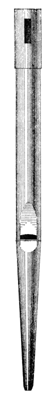
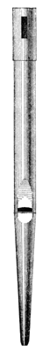

|
Slotted Flute English |
Listed only by Audsley, who provides the illustration reproduced here. He says:
The Slotted Flute is a new stop of 4 ft. pitch, producing a tone which differs from the tones yielded by all the commonly-made flute stops, open, covered, or half-covered. It is still in a tentative state, but deserves to be carefully developed so as to form a special family. The chief peculiarity consists in its being covered with a sliding cap, closed at top, and pieced on its side with an oblong opening or slot. The pipe is tuned by the raising or lowering of the cap, which is made sufficiently long to have a firm hold of the pipe-body below the slot. A satisfactory scale for this stop, in the ration 1 : 2.519, gives the middle c1 pipe a diameter of 1.24 inches, and the tenor C pipe a diameter of 1.97 inches. On this latter pipe the slotting is commenced, and is carried to the top note. The mouth is in width equal to two-ninths of the circumference of the pipe, and its height is one-third its width. The upper lip is slightly arched, and curved outward to a small extent. The wind-way is moderately fine, and in the c1 pipe is finished with seventeen small nicks. The slot may be varied in its length and width according to the strength and quality of the tone desired; but one measuring 1 1/4 inches in length by 3/8 inch in width, cut 1/2 inch down from the stopped end of the cap, may be accepted as suitable for the c1 pipe. All these dimensions obtain in our illustration. A variation of the tone is produced by substituting a circular performation 1/2 inch in diamater, cut 3/4 inch down from the stopped end. In a complete stop the bass octave should be formde of large-scale open metal or wood pipes, voiced to yield a decided flute-tone, carrying down as closely as possible the tone of the slotted pipes of the tenor octave.
|
Original site compiled by Edward L. Stauff. For educational use only. SlottedFlute.html - Last updated 14 August 2001. |
Home Full Index |